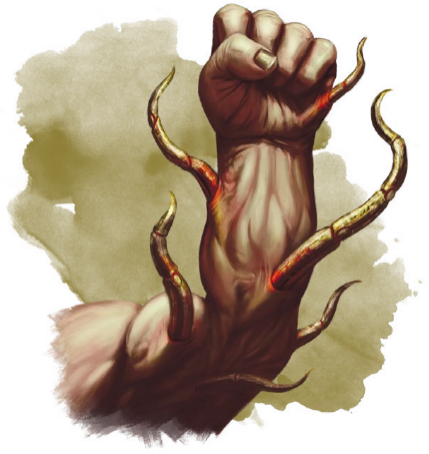

多达兰矮人们断言一切和地下世界的接触都会对摩洛领造成腐蚀。最近一个事态——摩洛氏族中厄兆矮人的诞生则支持了他们的论点。厄兆矮人出生时即带有自己的共生体——一件在婴儿身上的非自然器官。和其他共生体不同的是，它们无法从其宿主身上分离，两者永久性地融合在了一起。你可以在厄兆突变表中寻求灵感，或创造出你自己的突变。这些次级突变令人不安，但它们不会改变角色扮演的规则，也不会机械地给与增益。比如说，一位厄兆矮人看上去似乎没有眼睛，但尽管不合逻辑，他的视力依然能够不可思议地和其他矮人一样运作。
厄兆突变Ruinbound Mutation
d8 | 突变 |
1 | 非自然头发Unnatural Hair.你的头发是否有着不寻常的颜色？它是生物质的么？它是否会自行蠕动？ |
2 | 特殊皮肤Unusual Skin.你的皮肤是否透明、油腻，或是有着不自然的颜色？ |
3 | 异怪眼睛Aberrant Eyes.你的眼睛是否会发光，隐形？它们像是动物的眼睛，还是看上去根本不存在？ |
4 | 怪异胃口Strange Appetites.你是否喜欢烧焦的食物？你喜欢吃花，或是只能以活物为食？ |
5 | 活纹身Living Tattoos.你的身上看上去有着异域风味的纹身。它们在缓慢地不断变化，而你无法控制其图案。它们是显示出图像或文字，还是根本无法理解？ |
6 | 不老Ageless.时间流逝对你外表的影响和其他人不同。你是否显得比实际年龄更加苍老，或是无论如何你都显得格外年轻？随着年龄的增长，你是否会越来越年轻？ |
7 | 幻听Inexplicable Hearing.你没有能够看得见的耳朵，但你却可以清晰地听到。声音对你来说是否有所不同？你又是如何感觉到它们？ |
8 | 额外关节Extra Joints.你有一个或多个额外的关节。这是你手指上一个特别的指节，或是能让你反向弯曲你的腿？ |

时至今日，依然无人知晓厄兆矮人诞生的起源和目的——如果真的存在。多达兰氏族断言他们是在子宫中就被迪恩腐化的孩子，作为等候东山再起的异变魔的工具。纳拉孙氏族的贤者则说，他们的确可能是来自地下世界怪异力量的结果，但并无证据表明孩子们与凯博尔的异变魔有着任何直接联系，或者受到他们邪恶行为的吸引。无论真相如何，厄兆矮人的触须是近年才有的现象，第一个厄兆矮人孩子诞生于39年前，而依照传统，矮人50岁是才视作成年；然而，这些厄兆矮人孩子出人意料（有人认为是不自然的）早熟。
厄兆矮人十分稀有，能够从所有矮人血脉中诞生。摩洛领至今也不知道该如何对待他们，而他们对共生体的态度则反映了他们对厄兆矮人的态度。多达兰矮人对一切到他们领地上的厄兆矮人满怀敌意，声称象征毁灭的孩子用于也不会在他们的氏族中出生。虽然这的确可能，但也有传言声称撒多拉克特工们会将出生在多达兰氏族的婴儿带到到一个欢迎他们的氏族之中，避免他们遭受更加黑暗的命运。卓兰纳斯和托多拉斯氏族对这些孩子充满好奇，但厄兆矮人在他们中间也不一定会受到排斥。撒多拉克和纳拉孙氏族可能会接纳一个厄兆孩子，但也可能会拒绝他们，因为他们害怕其他氏族会利用这些孩子将他们的氏族蒙上堕落的色彩。在创造一个厄兆矮人角色时，你需要决定在你的背景中反映你是如何受到了接受。你是否一个孤儿或者化外之民，在被家人抛弃之后独自谋生？你是否一个骗子或罪犯，在周围人恐惧的逼迫下走上这条危险的道路？或者你是一位贵族，你的家人们对你不离不弃，无论你的状况如何——或者正是因为你身上的异常。
你可以以下面矮人亚种来建立一个厄兆矮人角色。作为一个厄兆矮人，你也能将你的职业能力归于你的共生体或其他非自然本质。作为一个术士，你可以通过共生体和其他突变来引导施法。任何具有无甲防御特性的都可以视作和你的肉体突变有关；如果你是野蛮人，你的狂暴可以是一种主动的突变。如果你是一位厄兆邪术师，你可以说与你共生之物便是你的宗主，一个在你体内活跃的独立意识，如果你帮助它成长，它会给你带来更大的力量。
尽管其他人可能会对你心怀恐惧，厄兆矮人并不天生邪恶。在创造厄兆矮人角色时，与你的DM商讨你故事的走向。你是否希望面对遭受腐化的威胁？迪恩是否可能在你身上有所计划？或者你是否希望摆脱身上的阴暗特征，成为一位真正的英雄？
厄兆矮人具有《玩家手册》中的矮人特质，外加以下特质。
如果你是一位厄兆矮人，你具有这一亚种和以下特质。
属性值加成Ability Score Increase.你的魅力加1。尽管你的共生体会带来肉体上的困扰，你仍然有着强大的个性和神秘的魅力。
独有共生体Pesonal Symbiont.你与一个异界实体紧密相连。它是你的身体的一部分。你的共生体带来了微弱的超自然能力供你使用。
从以下列表中选择一个戏法：酸液飞溅acid splash，神导术guidance（仅自身），虫群孳生infestation （XGE），光亮术light，法师之手 mage hand，冷冻射线ray of rost。当你的独有共生体完全展现的时候，你可以施展这些戏法。你可以选择隐藏你的共生体，但只有在展现出它的时候才能施展你获得的戏法。
当你结束一次长休后，你可以让共生体发生突变，获得不同的增益；当你这样做时，从列表中选择一个不同的戏法。魅力是你施展该戏法的施法属性。
和DM一同决定你共生体的外观。它是有机组织，但明显来自异界，当你以该特性施展戏法时，共生体将会显而易见地作为其源头。施展法师之手的共生体可能是一根细长的触须或怪异的昆虫，自你的身体中浮现并作出动作。一只从你的肩膀上凸出的眼柄能够以研究周围环境并以心灵感应给你建议的方式给予你神导术——或者通过冷冻射线轰炸你的敌人。虫群孳生则可能反映为一片总在你身边环绕不休的虫群之云。
共生体精通Symbiont Mastery.你能够无须同调位同调一件具有共生体特性的魔法物品。此外，当你结束一次长休之后，你能结束你一件对共生体魔法物品的同调。